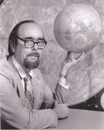

Please note: the AAS Obituaries are temporarily being hosted on this website while their full content is being ingested into the PubPub publishing platform newly adopted by the Bulletin of the American Astronomical Society. When the migration is complete, your existing links will take you to the final, migrated content. Contact peter.williams@aas.org with any questions.
John E. Westfall (1938-2018)
Photo: Higgins Chapel
John Westfall, geographer, academic, amateur astronomer, author, and world traveler, passed away on the 26 July 2018. John was a gentleman and a scholar, in the best sense. His accomplishments were exceedingly diverse, but because of his modesty he was reluctant to talk about them, so his career is not easy to summarize. Professionally, he was a geographer, receiving his B.A. at the University of California, Berkeley and his M.A. and Ph.D. in Geography at the George Washington University, and served as Professor of Geography and Environmental Sciences at San Francisco State University from 1968 to 2005. His real interest was, however, astronomy, which began at a very early age.
According to John’s own account (published in The Refractor , 16 August 2016):
Oddly, I can remember what started my fascination with astronomy: it was the photograph of Saturn in the 1931 edition of the Lincoln Library of Essential Information. I ran across the eye-catching photo in 1945, when I was seven. It prompted me to find out the address of Chabot Observatory, in my then home city of Oakland [California], allowing me to write a letter (unstamped) to its Director, Earle Garfield Linsley (1882-1969, Director 1923-47). The kind Professor Linsley introduced me to both the Chabot Observatory and the Eastbay Astronomical Association (as it was then named), which I joined as its ever-youngest (if not ever-young) member in February 1946. Thus, 1945-46 were an exciting couple of years. They even included the greatest meteor shower (actually meteor storm) I’ve ever seen, the Draconids of October 9th, 1946. Somehow, probably through Prof. Linsley, my father took us to our backyard where we watched an ongoing natural fireworks display (estimates gave up to 10,000 meteors per hour); the only problem is that all subsequent meteor showers have seemed tame to me!
Thus, while still wet behind the ears, John became a regular at meetings of the Eastbay Astronomical Association (which became the Eastbay Astronomical Society after 1949), which held its monthly meetings at Chabot. His interest was also encouraged by his parents, who paid for a subscription to Sky and Telescope in 1952, and membership dues of the British Astronomical Association and the Royal Astronomical Society of Canada. They also acquired for him a 3 ½-inch Skyscope reflector, which he trained every clear night on the Moon and planets.
As with most precocious youths, for a number of years most of his contacts were with much older individuals. In those days—long before the Internet—the only way to come into contact with others of similar interests was by letter-writing or attending meetings. He finally met some amateur astronomers in his own age group at conventions of the young Western Amateur Astronomers in Berkeley in 1952 and Flagstaff in 1956. Meanwhile, he had outgrown the 3 ½-inch Skyscope reflector. By 1954 was observing with a 4-inch Tinsley Saturn refractor—his primary observing instrument from 1954 until 1968 when he obtained a 10-inch Cave Astrola. He supplemented his backyard observing with sessions at Chabot, using the 8-in. Alvan Clark and 20-in. Brashear/Warner & Swasey refractor to observe Mars at the June 1954 and September 1956 oppositions.
Those were heady days in which to be young and a budding amateur astronomer. Interest in Mars was again very high—and books like Robert S. Richardson’s Exploring Mars stoked the fires of enthusiasm, by providing considerable encouragement to the idea that there might be at least primitive lifeforms on the planet (as was believed by the majority of even sober astronomers at the time). The British amateur astronomer and prolific popular astronomy writer Patrick Moore was beginning to make a great impression with books like Guide to the Moon , Guide to the Planets , Guide to Mars , The Planet Venus . Also, the first Earth satellite (Sputnik in 1957) and probes to the Moon (the Luniks of 1958 and 1959) were being launched.
It was inevitable that at such a time a young person taking up astronomy would be most captivated by the Moon and planets, and so it was with the young John Westfall. That interest was, moreover, greatly stimulated when, in 1953, he discovered the Association of Lunar and Planetary Observers (ALPO), which had been founded in 1947 by Walter H. Haas (1917-2015). John wrote a letter expressing his desire to become a member, and much as Eric Linsley had done previously, Walter Haas became an indispensable mentor and lifelong friend. And so, John began what would be a lifetime of dedicated service to the organization which meant more to him than any other. He held many official positions, including: Recorder for the Lunar Section (General) from 1962 to 1993, Recorder/Coordinator of the Mercury/Venus Transit Section 1993 until his death, Recorder/Coordinator Jupiter Section (Galilean Eclipse Timings) 1981-2018. He was Associate Director of the ALPO from 1977 until 1985, Director from 1985 to 1990 and Executive Director (following ALPO’s incorporation in 1990) from 1990 to 1995, Editor of the Journal from 1985 to 2000, and Board Director from 1990 until his death. He was an avid member of other astronomical organizations; for instance, he attended, for some twenty-five years, the NCHALADA (Northern California Historical and Lunch and Discussion Association) to discuss topics in the history of astronomy, and also made it a priority to attend the Lunar and Planetary Science Conferences at the Woodlands (near Houston) in Texas every year.
Very early in his career, John developed what would always be his chief research interest– eclipses, transits, and occultations. At the age of only 19, John made some exceptionally valuable observations of a stellar occultation by Saturn’s rings with the 20-inch Brashear refractor at Chabot on 27 April 1957. Such events are rare, and in the pre-spacecraft era they were the best source of information about the structure of the rings. Nowadays, of course, occultations of stars and radio signals from spacecraft have become commonplace, but at the time John observed this event, there had been only two previous ones in the history of Saturn observations: the first was observed in 1917 by the British observers James Knight and Maurice A. Ainslie (1869-1951), and was called by Saturn historian A.F.O.D. Alexander, “one of the greatest triumphs ever achieved by observers of Saturn in Great Britain.” The other was observed by meteor astronomer Frederick C. Leonard (1896-1960) at Griffith Observatory in 1939. John’s observations at the April 1957 occultation were carried out with meticulous care, and the professional Russian astronomer Mar Sergeevich Bobrov (1914-1990) based an analysis on them showing that the A ring was partly transparent, as were at least portions of the B ring. Indeed, John’s results continued to be cited in standard works on the rings right up until the spacecraft era (see Elliott and Kerr,
Ring
s, pp. 33-34).
Apart from his continuing involvement in ALPO, John’s astronomical activities were curtailed to a certain extent between 1960 and 1968, while he was living in the Washington, D.C. area, employed by the Coast and Geodetic Survey (now the U.S. National Geodetic Survey) and attending the George Washington University while working toward his master’s and doctorate degrees in geography. He did, however, take advantage of being located on the East Coast to travel to Maine for his first total eclipse of the Sun, on 20 July 1963. (No one could then have guessed that in only six years to the day, humans would set foot on the Moon.)
John’s professional training in geodesy and mapping, which he pursued as a professor of geography and environmental sciences at San Francisco State University between 1968 and his retirement in 2005, worked hand in glove with his interests in amateur astronomy. For instance, he led the systematic and coordinated effort to map the South Polar Region of the Moon, a region which had been hidden in shadow during the Lunar Orbiter missions of the 1960s. A number of talented observers had made attempts to map this region, which includes in part the huge South Pole-Aitken basin (after the Hellas basin on Mars, the largest basin known anywhere in the Solar System). One was the celebrated selenographer Ewen A. Whitaker (1922-2016) who had carried out preliminary surveillance while still at the Royal Greenwich Observatory in the 1950s; he was drawn to the limb regions by the fact that they looked rather if they were being viewed from an orbiting spacecraft! Another was the noted British amateur astronomer and artist Harold Hill (1920-2005) who worked on the project for several decades but—owing in part to his very rigorous standards—failed to finish. Westfall, in collaboration with his associates, succeeded: he completed a map in the early 1990s. It merits comparison with maps carried out by Clementine and more recent spacecraft.
As noted earlier, eclipses, transits and occultations were John’s chef-d’oeuvre . As an eclipse chaser, he started out slowly—at first traveling only to those that were geographically close at hand, such as the 20 July 1963 eclipse, observed from the coast of Maine as noted above, and the 26 February 1979 eclipse from Yakima Valley, Washington. From 1988, however, he began to make up for lost time, and eventually logged thirteen total eclipses, as well as four annular eclipses. (See table of John’s observed eclipses below.) It was a source of deep regret that, owing to illness, he was unable to see the “Great American Eclipse” of 21 August 2017.
Though as addicted to the thrill of totality as anyone else, John was, more than most, an eclipse egalitarian, and also avidly pursued annular eclipses as well as less dramatic events, such as lunar eclipses and Galilean satellite phenomena. Lunar eclipses were always meticulously observed. He always made careful timings of the progress of the Moon’s shadow across designated craters and observed the depth of darkness (using the Danjon scale) and colors. By this means he was to discern changes in the Earth’s atmosphere, with results bearing on the question of climate change (in which he, of course, believed). He systematically tabulated and analyzed Galilean satellite eclipses, transits, and occultations for the ALPO. He was also a keen student of the “mini-eclipses” known as transits of Mercury and Venus, and was one of the world’s leading experts on the history and observation of these phenomena. Though even in the case of Venus, whose diameter during transit is only 1 minute of arc, the effect is more cerebral than visceral, nevertheless, the importance of these events in the history of astronomy, and in particular their historical role in measuring the solar parallax, made them irresistible for John, and combined several of his principal interests.
John and his wife Beth travelled to far points of the globe to view transits, no less than eclipses. For the transit of Mercury of 6 November 1993, they went to Coonabarabran, Australia. For both the transit of Mercury of 7 May 2003 and the transit of Venus of 8 June 2004, their destination was Lemeso, Cyprus. (The island was particularly fitting, given its ancient associations with the goddess sometimes known as the “Cyprian”.) The transit of Venus of 6 June 2012 was visible from his private observatory in Antioch, California, and therefore could be studied with the instruments of his own observatory (of which the principal telescope was a 25.4-cm f/16.5 Cassegrain telescope, specifically designed for Solar System observations).
John was co-author of two books that deal with the transits. The first (with William Sheehan) is Transits of Venus (2004), of which Harvard University historian Owen Gingerich said, “For 40 years the standard account of this rare phenomenon has been the late Harry Woolf’s doctoral dissertation, The Transits of Venu s, published in 1959…. Now, in an engaging account … Woolf’s monograph is at long last superseded.” The second is Celestial Shadows (2015, also with William Sheehan), which although it treats transits of Venus also extensively treats the whole range of eclipse, satellite, and transit phenomena in the Solar System—indeed, in the era of extrasolar planet discovery, beyond. John regarded the latter as his magnum opus ; it is hoped that it will be appreciated as a standard reference work for a long time to come.
Incidentally—and perhaps surprisingly, given the depth and extent of our collaborations--John and I met in person only twice: once in San Francisco in 2001 or so, and once in Flagstaff, Arizona, in 1994, although that one escaped John’s memory. We also spoke, as far as I can remember, only once on the phone. Otherwise our collaboration was entirely by “snail mail” (in the old days) or by e-mail once that became the norm. I have a large folder of letters from John, and a few hard copies of e-mails. The world is obviously a very different place indeed from what it was in 1946, when John joined the Eastbay Astronomy Association and when personal—face to face—contact with specialists and other enthusiasts was an indispensable part of advancing in one’s hobby or career.
Wife Beth was not only John’s co-traveler on global expeditions, but also eagerly—or at least gamely--agreed to play the role of proofreader of every book and article that John ever wrote, and little escaped her keen eye. Having myself collaborated with John on two of the three books he wrote (his third, The Atlas of the Lunar Terminato r, had been published in 2000), I can say that he was an ideal co-author; we brought out the best in each other. John could always be counted on for an encyclopaedic knowledge of detail, the ability to track down every possible relevant reference, and an amazing deftness in putting together tables of data (fully analyzed, of course), expertly drawn maps, and lucid diagrams. Furthermore, he was always patient, and had a genius for taking infinite pains. He also had a penchant for coming up with witty and humorous sub-headings and elegant turns of phrase to leaven long tracts dense with data and detail. Everyone who knew him attests to his delightful (if dry) sense of humor.
Astronomical events such as eclipses and transits were, in some respects, mere excuses to travel the globe—and thus to advance John’s (and Beth’s) absorbing interest in geography and history. Beth recalls, “Wherever we went … there were always sites associated with the history of astronomy to be visited. Because I loved history, although different periods and topics, we were excellent travel companions. Each could enjoy the topics of interest to the other. Early in our adventures we developed a working relationship. We planned the trips together. John took the lead in determining the itinerary and special sites to visit. I arranged the details to make the plan work. I was the driver and he the navigator. In Britain, in Turkey, in Spain, in Finland, in Australia, in Fiji, we would start down a dirt road to a site he had identified. The paved road turned to dirt, then got progressively narrower. ‘Are you sure this is the right road?’ I would ask. Buried in his maps and air photographs, he would say, ‘Yes, keep going.’ And we always found what we were looking for.”
One of John’s particular heroes, associated with the 1769 transit of Venus, was Jean-Baptiste Chappe d’Autoroche, who observed the transit at Cabo San Lucas, Baja California, and died soon afterward (probably of typhus). Beth recalls this visit, which was undertaken when they were in Baja for the 11 July 1991 total eclipse. “Working from a sketch that one of Chappe’s men had made and studying topographical maps, John triangulated the ridgeline of the drawing with the ridgeline of the hills, and he was confident that he had located the spot.” She adds: “Today that could not be done; the ridges are covered with condos.” During a visit to Hawaii, they were not to be found on the beaches, but searching out the plaques marking the observing sites for the total eclipse of 3 June 1850 (the last visible there until 11 July 1991). The Westfalls’ travel itinerary included many historic observatories, including Lick on Mt. Hamilton, near San Jose, California, Lowell in Flagstaff, Arizona, Greenwich and Herstmonceaux in Britain, Pulkova in Russia, the observatory in Rio de Janeiro, the Archenhold Sternwarte in Berlin and many others. John counted as one of his greatest privileges being treated to a personal visit of Clyde Tombaugh’s personal observatory in Las Cruces, New Mexico, with Clyde’s home-made mounting and viewing deck. Also, beginning in 2013, John joined a small group of like-minded individuals, mostly from the San Francisco Bay area, for annual observing sessions with the 60-inch reflector at Mt. Wilson. As was typical with John, he always went thoroughly prepared with an extensive program of ephemerides, notes, diagrams and maps of what was to be seen. He prepared such a program for the latest—June 2018—get-together, which however he was sadly unable to attend.
Other places with astronomical tie-ins were the Nördlinger Ries and Steinheim craters in southern Germany, which had been identified as impact craters by close friend Eugene M. Shoemaker (1928-1997), and Gosses Bluff impact crater in the Australian outback, which they viewed from a light plane. The Odessa crater, at Odessa, Texas, also made the list.
John, obviously, had a streak of obsessive-compulsiveness, and a decided dislike for incomplete series. For instance, after viewing the Goldstone and Canberra tracking stations belonging to the NASA Deep Space Network, only one—Madrid—remained. John and Beth finally added it in 2003, when they went to Madrid for the Annular Eclipse that year.
John enjoyed science fiction and historical fiction such as the novels about Falco, a 1 st Century Roman “detective” (by Lindsey Davis). His favorite author was, however, H. P. Lovecraft (1890-1937), and for many years, he produced a Lovecraft-themed calendar which he would send during the holiday season as a gift to (carefully vetted and select) friends. Well aware of the fact that Lovecraft identified his fictional Yuggoth with Pluto when the latter was discovered in 1930, John was of the opinion that Lovecraftian names ought to be adopted for all the features discovered by the New Horizons probe during its July 2015 flyby, and—knowing that I was a member of the Working Group for Planetary System Nomenclature (WGPSN)—painstakingly compiled, for my benefit and for the benefit of other members of the group, a list of hundreds of Lovecraftian names for possible inclusion. So far only one of them has made it onto Pluto: Chthulu Macula is the name officially adopted by the IAU for an elongated dark region along Pluto’s equator. Needless to say, John was delighted by that one.
In spite of illness, John remained alert and active to the very end. Though he would miss the eclipse of 21 August 2017, he was able to attend his last ALPO annual meeting in June 2018. I received my last communication from him less than two weeks before he died. For some years he had been working, with Al Gomez (Spain) and me, on a project combining several of his keenest interests—the lunar terminator, eclipses, and the calculation of distances in the Solar System. We were interested in exploring how well Aristarchos of Samos (or someone of his time) might have measured the Earth—Moon—Sun angle at the time the Moon was noted to be exactly half. John personally invented and put together an ingenious device for the purpose, called a dichometer, and made a long series of lunar terminator observations, which he summarized in a masterly paper—completed shortly before his death, when he was, however, too ill and weak to submit it for publication. Fortunately, it will appear in the Journal of the Association of Lunar and Planetary Observe r s , as he undoubtedly would have wished. It is a minor masterpiece, and a monument to this brilliant, modest, latter-day Aristarchos.
Writing his own epitaph, Johannes Kepler wrote: “Once I measured the heavens, now I measure the Earth’s shadows.” John Westfall would have appreciated the sentiment. Few have ever measured the heavens—or the Earth’s shadows—better than he. If it is possible to measure the shadows wherever he is now, I am sure that he will find a way.
Obituary Written By
: William Sheehan (Flagstaff, Arizona)
Acknowledgments : I would like to thank Elizabeth Westfall, Matthew Will, Robert Minor, Robert Garfinkle, and Alberto Gomez Gomez for their reminiscences, documents, and suggestions.
References
R. Baum, “Harold Hill and the South Polar Region of the Moon .” Journal of the British Astronomical Association , 120 (2), 86-97 (2010).
J. Elliott and R. Kerr, Rings: Discoveries from Galileo to Voyager . Cambridge, Mass.: The MIT Press, 1984.
O. Gingerich, “Transitory quandaries,” Sky and Telescope , 107 (6), 108-109 (June 2004).
W. Sheehan and J. E. Westfall, Transits of Venus . Amherst, New York: Prometheus, 2004.
J.E. Westfall,
--“Luna Incognita: completing the Map of the Moon,” Sky & Telescope , 67 (3), 284-286 (March 1984)
-- “Mapping Lunar Incognita,” Journal Association of Lunar & Planetary Observers , 34 (4), 149-159 (1990).
--“The Luna Incognita Project,” Sky & Telescope , 8 2(5), 556-559 (November 1991).
-- Atlas of the Lunar Terminator . Cambridge: Cambridge University Press, 2000.
-- Celestial Shadows (with William Sheehan). New York: Springer, 2015.
--“Reconstructing Aristarchos’ Sizes and Distances.” Journal of the Association of Lunar and Planetary Observers ; accepted for publication.

Additional links:
BAAS Citation: BAAS, 2018, 50, 021